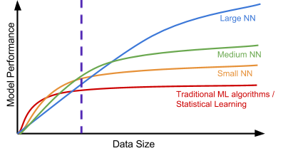

Introduction to Deep Learning · Introduction · Chapter 1
What is Deep Learning?
In this chapter
As our world becomes more digitized, more and more information is being structurally recorded. As a result, a plethora of enormous data sets have been made, many of these being available to the common public. Kaggle, a child company of Google, has become one of the most popular hubs for accessing such data sets.
As such, it has become increasingly important for large industries and companies to be able to effectively understand and use this gathered information. This necessity has inspired the development of the realm of data analysis.
Machine Learning is one of the sub-branches of data analysis in which humans employ computers to identify and extrapolate patterns in data.
Deep Learning is the use of Machine Learning through a method known as “Neural Networks.” Neural Networks are a mechanism which tries to mimic the human brain in terms of how patterns in data are identified.
Purpose The goal of this handout is to discuss the technicalities and specifics of Deep Learning models so that you may fully understand the fundamentals of Deep Learning as well as how to make a Deep Learning model yourself.
1.1Applications of Deep Learning
You likely experience the impacts of Machine Learning many times on a daily basis. Many practitioners have begun to use Neural Networks as opposed to other models in Machine Learning, which means that you are also likely deeply affected by Deep Learning in your daily routines.
Here are some common examples of Machine Learning and Deep Learning at work:
Weather prediction;
Content recommendation systems (Netflix, YouTube, Amazon, Spotify, etc.);
Spam filters for email;
Supply and demand forecasting in business;
Autonomous driving vehicles;
Photo recognition systems;
Speech recognition systems;
Smart devices (Siri, Cortana, Google Home, Amazon Echo, etc.);
Search Engines (Google, etc.);
Translation Systems (Google Translate, etc.);
Spellcheck (Google Docs, Grammarly, etc.);
Medical research and imaging;
Biometric scans (fingerprint, facial recognition, etc.);
Deep fakes.
The list goes on, and on, and on…
Hopefully, you were able to relate at least one of these items to your personal life. If so, you know the value of Machine Learning from a practical perspective.
What’s more is that the hype has only just begun! While shown to be colossal in its implications, Machine Learning is a relatively young topic, and a multitude of research is being done for it.
If you do not have any project ideas, look for data sets on Kaggle that interest you! Remember, anywhere that there is data, there is a chance for Machine Learning to be applied. Kaggle also has many competitions on their website which you can take inspiration from (or enter).
1.2Deep Learning v.s. Other Machine Learning Algorithms
There are tons of models out there. Here are some:
Linear/Polynomial Regression;
Logistic Regression;
Support Vector Machines;
K Means Clustering.
Out of all of these, why do we choose to use Neural Networks?
To answer this question, we examine why other models were even made in the first place. Consider the following image (source link):

Consider the left side of the vertical dashed purple line. This is represents the size of the data sets prior to digitization of information. At this time, data sets were small, and using any kind of model seemed satisfactory.
However, as digitization began, data sets became more like the ones to the right of the line. They were bigger, and at this time, the performance of Neural Networks and Deep Learning shined through.
Compared to Deep Learning, other models are just not as outstanding anymore, which is why many systems are making a switch.